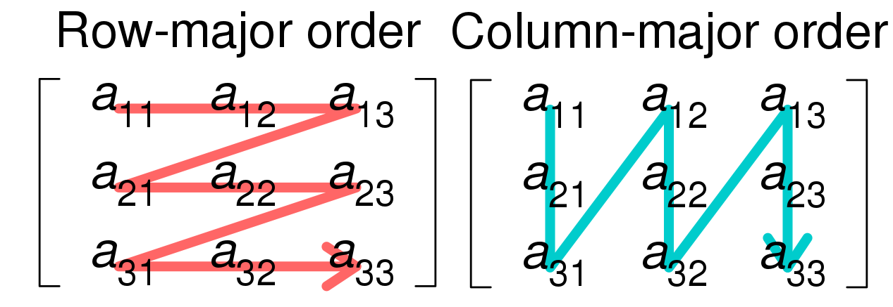

Introduction
The following pages are for the users who want to use NumSharp.
Before you read the code examples you should read this page which explain some basis concepts. An other reference can be numpy since we try our best to follow their APIs (High level - not lower level).
NDArray, NDStorgage and Shape
The 3 main classes in NumSharp are NDArray, NDStorage and Shape. If you want to have a better understanding for NumSharp, you can read the following lines to see how all works together.
Let's start with the question - what is a Tensor?
From programming point of view a tensor is a multi-dimensional array (scalar, vector, matrix, ...) mostly for numerical data like int32, int64, doubles, ... which can be accessed via indexes like np[idx], np[idx,jdx], np[idx,jdx,kdx], ... depending on its dimension.
Ok - in this sentence we got already some properties.
- a tensor is an object for storing (mostly) numerical data
- a tensor has a dimension
- the dimension decides how many indexes are necessary to access the stored data
Each tensor type (dimension 1 - vector, dimension 2 - matrix, ...) has its own .NET type like double[,].
NumSharp brings its own tensor / array type called NDArray.
So now the question - .NET offers already multi-dimensional arrays - why a new array type?
NumSharps NDArray offers the capability of storing any tensor (independent of dimension!) into its internal storage. So NumSharps NDArray can store a vector, a matrix or sth with dimension 5 and higher. This is not possible with .NET arrays since each tensor type is a different class. This offers users the possibility to use same methods for different tensor types.
Now the next question - how a NDArray can do this?
First of all we need to be a little bit more abstract. Why we use tensors? Because we want to store data and we want to get them. How we get and set them? We get and set via indexes (which are always integers). So just this data are important and the corresponding indexes. That's it. Data + Indexes. :)
With this in mind we easily can understand the NDStorage of NumSharp.
NDStorage is an object which stores the data of a tesor in a single 1D array. Since it is a 1D array independend of the tensor dimension NDStorage can be used for all kind of tensors. A vector is stored inside a 1D array, a matrix, a 3 dimensional tensor and so on.
But hold on! How the data comes into this 1D arrayand how we get them back?
NDStorage has a property called "shape". The shape is a small but important class in NumSharp. It stores the dimensions and most important! it determines which element in the 1D array is selected by given indexes.
To understand the methods for determines 1D internal storage index by NDArray indexes and vice versa we give examples of different tensor types.
Vector
Imagine a 1D tensor (a vector). Here it is easy because you can access the data with a single index like 'a = np[idx]'. The internal data store in NDStorage is a 1D array - so index to access is the same index in internal storage.
Matrix
Here it is a little bit more tricky. Each data element is stored by 2 indexes like np[idx,jdx] = 5. The internal storage is a 1D array so .... there must be a way to map the 2 indexes [idx,jdx] at NDArray level to a single index [kdx] in NDStorage level.
Indeed there is!
Not just in NumSharp but also in many other frameworks, libs or (general spoken) languages it is good style to store the elements of a matrix row wise or column wise into a 1D array. For a more professional description you can check https://en.wikipedia.org/wiki/Row-_and_column-major_order. Row wise Layout and column wise layout often also called row major and column major.
General spoken when imagine a matrix as a table - Row wise means that you start with element [0,0] (as your first element in 1D array) and take elements from columns of 1st row (and store them in the 1D array) until all elements of the 1st row are stored inside the 1D array. You go on with the 2nd row - take element [1,0],[1,1],[1,2],...,[1,n-1]. Go on with this pattern until all elements are inside the 1D array.
Column wise also starts with the element [0,0] but! it stays in the 1st column and takes elements along the rows until all elements from 1st column is stored. Repeat this with 2nd column, 3rd and so on.
The image below (taken from https://en.wikipedia.org/wiki/File:Row_and_column_major_order.svg) shows again the 'algorithm' for storing data from matrix to vector.
{kind=link}

N dim tensor
Now we come to the most tricky question - how to store a general n dimensional tensor inside a 1D array.
Short anwser - exactly like a matrix - just more generalized.
First we look again the row wise order.
[0,0] -> [0,1] -> [0,2] -> [0,3] -> [0,n-1] -> [1,0] -> [1,1] -> [1,2] -> [1,3] -> ...
So here we stay in one dimension (the first / rows) and fill the other dimensions until the dimension is full. After we switch to the next higher level of dimension (so change to next row).
For higher dimensions like 3D - NumSharp follow this pattern.
[0,0,0] -> [0,0,1] -> [0,0,2] -> [0,0,3] -> [0,0,n-1] -> [0,1,0] -> [0,1,1] -> [0,1,n-1] -> [0,2,0] -> [0,2,n-1] -> [0,m-1,0] -> ...
General spoken - you can image it as a backward filling layout.
As you can see the dimensions are filled beginning from last dimension, if one dimension is full, the dimension before is increased.
Next we look the column wise order.
[0,0] -> [1,0] -> [2,0] -> [3,0] -> [n-1,0] -> [0,1] -> [1,1] -> [2,1] -> [3,1] -> ...
Again we stay in one dimension but here in the last / column. The rows are filled until the 1st column is full and next dimension is increased.
So fill first dimension, increase next, fill again, etc. also in n dimensional tensor.
[0,0,0] -> [1,0,0] -> [2,0,0] -> [3,0,0] -> [n-1,0,0] -> [0,1,0] -> [1,1,0] -> [n-1,1,0] -> [0,2,0] -> [n-1,2,0] -> [0,m-1,0] ->
And this you can imagine as forward filling layout.
That's it. Now you have enough knowledge about NDArray, NDStorage and Shape. Check the other chapters for a how to use. :)